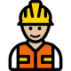
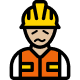
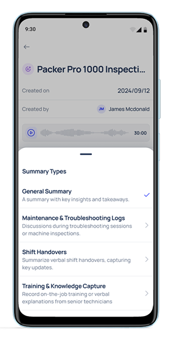
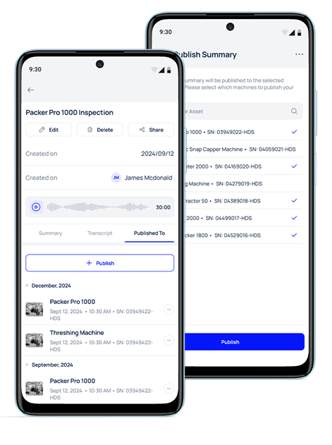
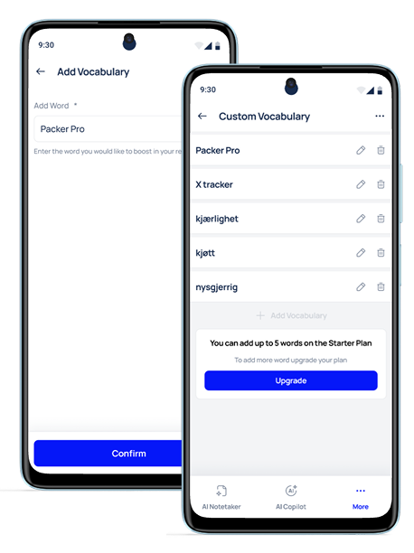
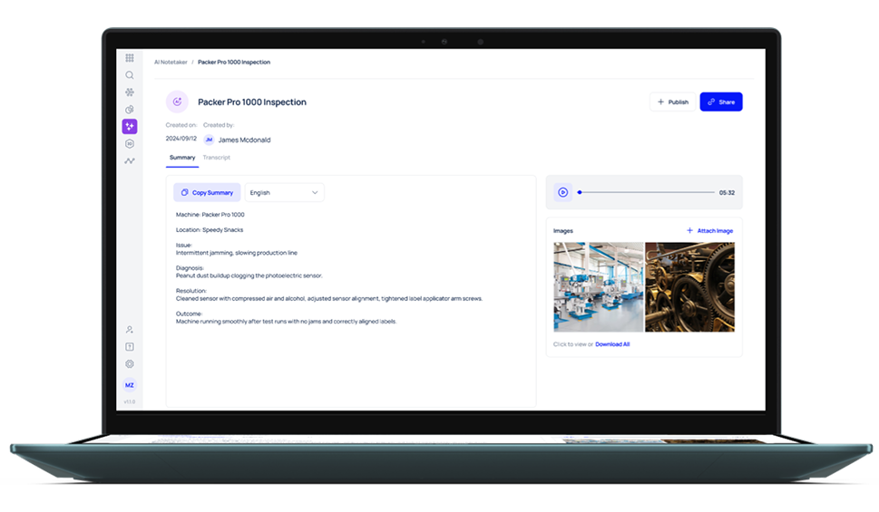

Speech to text transcription
An audio notation flow with options to pause the recording and upload later when connected to Wifi.
Zero to one B2B SaaS MVP
0→1 · AI product design · Speech-to-text · Journey mapping · Field service · MVP
Company:
Makula
Role:
Freelance Product Designer
Year:
2024-2025
Team:
Saman Farooq (Product Team) Gohar Nadeem (Product Team) Shahzaib Ali (Sr. Product Designer)
Makula is a CMMS and FSM platform for machinery manufacturers and distributors. The team was expanding its AI portfolio by automating tasks for its users.
A consistent complaint across clients was reporting for maintenance and field visits. Field service technicians made multiple facility visits a day and spent hours after documenting each causing delays, inconsistent reports and information gaps.
| Stage | Before Visit | Arrival & Setup | During Visit | After Visit |
|---|---|---|---|---|
| Experience |
 Confident |
Confident | Stressed |
 Overwhelmed |
| Objective |
|
|
|
|
| Pain Points |
|
|
|
|
I was tasked with developing an MVP for an AI notetaker. I conducted comp scans, led UI/UX design and prototyping for the MVP, working with the product team and a customer success team to iteratively improve the usability.
We examined existing notetakers in the market to establish best practices and look for opportunities to develop USPs for our users.


Based on this we developed a revised user journey that addressed user pain points.

An audio notation flow with options to pause the recording and upload later when connected to Wifi.

Summary types that give structured outputs for common tasks and visit types to standardize reporting.

Image capture allows technicians to attach photos while recording for more detailed visit documentation.

Linked notes to assets, to centralize documentation and link it to part of the platform's operational record.

Added custom vocabulary so admins could improve transcription of domain specific terms.
Users reported that the notetaker allowed them to continue their work while documenting it simultaneously. This automated the entire post-visit documentation stage, which typically took about 1-2 hours per day. It was a strong enough signal for the Makula team to offer 30 mins of free transcription to all app users. This was the first feature of the industrial AI module.

This project was my first designed with automation in mind and taught me the value of selecting small and high impact problems first.